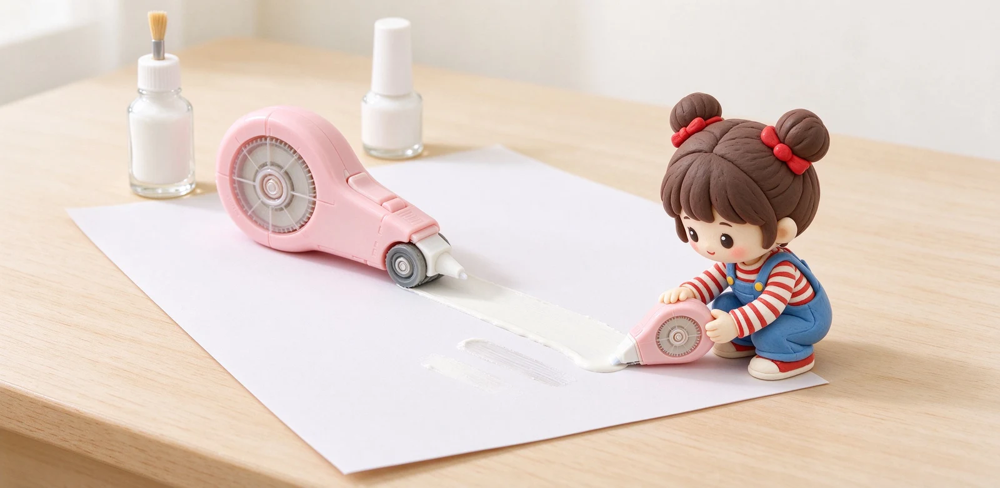

語意摘要：修正帶是把一層白色塗膜滾壓到紙上，即貼即寫、乾淨但不能立刻改太大力；立可白是鈦白粉加有機溶劑的液態塗料，要等溶劑揮發才乾、有化學味且易燃。學生筆記、上班族文件，修正帶是主流；選對寬度（常見 4.2、5mm）與用平穩力道貼合，就不會出現捲邊、空心或貼歪。
兩者原理根本不同：一個是貼貼紙、一個是刷油漆
修正帶的構造像一台迷你印表機：裡面捲著一條塗了白色塗膜的膠帶，你往前拉，膠帶就被轉移、貼合在紙上。好處是馬上能寫，沒有等待，也不會弄髒手。
立可白（修正液）完全是另一回事：它的白色來自鈦白粉（二氧化鈦），泡在石腦油、礦油精這類有機溶劑裡，再加上樹脂與分散劑。刷上去後溶劑揮發，留下一層白色膜。瓶裡那顆小鋼珠，就是給你搖晃用來把沉澱的鈦白粉重新拌勻的。
優缺點對照：什麼時候該用哪個
| 比較 | 修正帶 | 立可白 |
|---|---|---|
| 能不能立刻寫 | 可以，即貼即寫 | 要等幾十秒到一分鐘乾 |
| 氣味／安全 | 幾乎無味 | 有溶劑味，易燃需通風 |
| 貼在薄紙 | 容易鼓包、厚重 | 太多會讓紙皺起 |
| 修表面髒汙 | 不行 | 可以刷掉小髒點 |
| 攜帶 | 筆型可放筆袋 | 玻璃瓶怕摔、怕漏 |
| 可重複貼 | 重貼易起邊 | 乾後可再刷一層 |
結論很直白：現代學生筆記、上班族改文件，九成場景修正帶都贏。立可白還有人用，主要是它能修掉紙面的小黑點、指紋這種「不是寫錯字」的小瑕疵，以及在一些老式作業流程裡的習慣用法。

修正帶規格怎麼看？寬度與長度
挑修正帶主要看兩個數字。一是「膠帶寬度」：日本大廠如 Tombow、PLUS 常見有 2.5mm、4.2mm、5mm、6mm 幾種。一般中文一行字高約 5 到 6mm，改單字用 4.2mm、改整行用 5mm 最通用；2.5mm 太窄只適合精細改錯。
二是「長度」：常見 6m、8m、12m。筆型攜帶款多為 6m，桌上長條款到 12m。以 Tombow 為例，MONO CF 是 4.2／5／6mm 寬、8m 長；CX 系列則有 12m 長的更換卡夾。選可換蕊的款式，長期下來比整支丟掉環保又省錢。
貼不捲翹、不空心的正確手法
很多人貼出來不是中間空心、就是兩邊翹起，其實是力道與角度的問題。記住三個動作：
- 傾斜約 45 度，讓出帶口貼緊紙面，不要垂直壓。
- 單一方向平穩拉到底，速度平均，不要忽快忽慢。
- 貼完用指甲或筆尾輕輕壓過帶面，讓它服貼再書寫。
萬一貼歪或貼出空心，不要來回重複滾同一條——那只會把紙面起毛。新手建議在廢紙上練個兩條，抓到自己的力道就上手了。
安全與常見疑問
常見問題 FAQ
修正帶和立可白哪個比較好用？
修正帶要選幾 mm 寬？
為什麼我的修正帶貼起來會空心或翹邊？
立可白瓶裡的鋼珠為什麼要搖？
立可白可以給國小小朋友常用嗎？
資料來源與核實依據
- MONO ps 修正帶（寬度 2.5／4.2／5mm 三種）（Tombow 蜻蜓）
- MONO CX 修正帶可換卡匣（4.2／6mm × 12m）（Tombow 蜻蜓）
- PLUS MR2／MR2 mini 筆型修正帶（4.2／5mm × 6m）（PLUS Stationery）
- Liquid Paper FAQ（搖晃均勻、可加稀釋劑）（Liquid Paper）
- 修正液成分：二氧化鈦、溶劑、石腦油、樹脂與香精（Liquid Paper 資源整理）
相關文章推薦

學生文具清單：國高中到大學開學最該買、最不該買的文具
學生文具的真理：每天寫字的筆、筆記本、立可帶要買好一點；看起來療癒但用不到的造型周邊，忍住，你比自己想像的懶。

考試與會議用筆怎麼挑？速乾中性筆、防滑握位與長時間書寫
考試跟會議用筆的重點只有三個：速乾不被手抹花、握久不滑、黑得清楚。ENERGEL 主打速乾、uni-ball one 低重心好握、Juice Up 細尖飽和，都是這個場景的常勝軍。

橡皮擦怎麼選？為何會擦不乾淨、弄破紙？橡皮擦材質完整解析
橡皮擦能不能擦乾淨，關鍵不是你用力多大，而是材質：軟而帶黏的把石墨「粘」下來，含砂的硬磨反而會把紙一起磨掉。